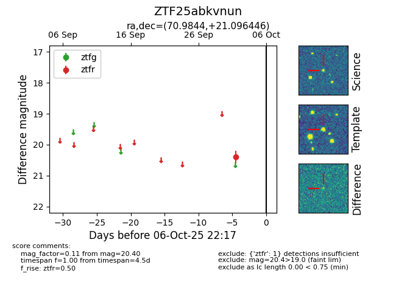

FINK: ZTF25abkvnun
Lasair: ZTF25abkvnun
ALeRCE: ZTF25abkvnun
ZTF25abkvnun (ztf,fink)
equatorial (ra, dec) = (70.9844,+21.09645)
galactic (l, b) = (178.4088,-15.92324)

last ztfr=20.40
1 ztfr detections